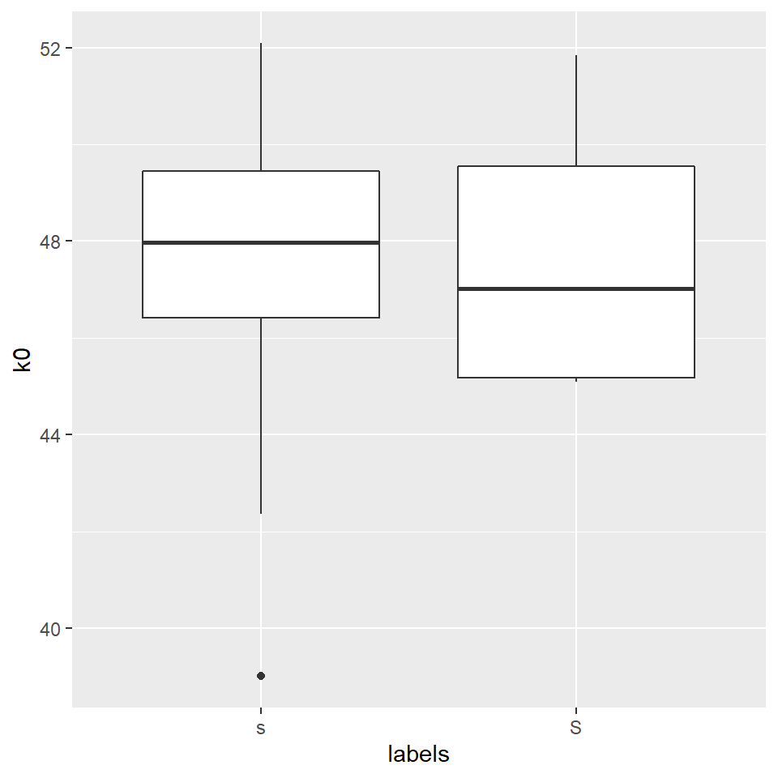
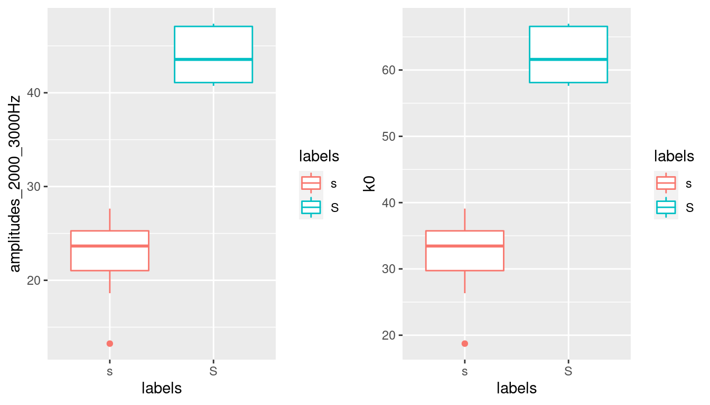

- Welcome
- 1 Installing the EMU-SDMS
- I Overview and tutorial
- 2 An overview of the EMU-SDMS
- 3 A tutorial on how to use the EMU-SDMS
- 3.1 Converting the TextGrid collection
- 3.2 Loading and inspecting the database
- 3.3 Querying and autobuilding the annotation structure
- 3.4 Autobuilding
- 3.5 Signal extraction and exploration
- 3.6 Vowel height as a function of word types (content vs. function): evaluation and statistical analysis
- 3.7 Conclusion
- II Main components and concepts
- 4 Annotation Structure Modeling
- 5 The
emuDBFormat - 6 The query system
- 7 Signal data extraction
- 8 The R package
wrassp - 9 The
EMU-webApp - III Main
emuRfunction and object index - 10
emuR- package functions - IV Implementation
- 11 Implementation of the query system
- 12
wrasspimplementation - 13
EMU-webAppimplementation - V Appendices
- 14 Use cases
- 14.1 What is the average length of all n phonetic segments in the ae
emuDB? - 14.2 What does the F1 and F2 distribution of all phonetic segments that contain the labels I, o:, u:, V or @ look like?
- 14.3 What words do the phonetic segments that carry the labels s, z, S or Z in the ae
emuDBoccur in and what is their phonetic context? - 14.4 Do the phonetic segments labeled s, z, S or Z in the ae
emuDBdiffer with respect to their first spectral moment?\footnote{The original version of this use case was written by Florian Schiel as part of theemuR_introvignette that is part of theemuRpackage.
- 14.1 What is the average length of all n phonetic segments in the ae
- 15 File Formats
- 16 The
EMU-webApp-websocket-protocolVersion 2.0 - 17 EQL EBNF
- 18 EQL: further examples
- 18.1 Simple equality, inequality, matching and non-matching queries (single-argument)
- 18.2 Sequence queries using the -> sequence operator
- 18.3 Subsequent sequence queries using nesting of the
->sequence operator - 18.4 Conjunction operator &
- 18.5 Domination operator ^ (hierarchical queries)
- 18.6 Position
- 18.7 Combinations
- 18.8 A few more questions and answers
- 18.9 Differences to the legacy EMU query language
- 18.10 Bugs in legacy EMU function
emu.query()
- 19
wrassp - VI Recipes
- 20 About
- 21 Spectral analysis
- 22 Plotting snippets
- 23 Version control of emuDBs including collaborative annotation with Git and GitLab
- References
21.3 DCT coefficients
Until now, we have applied dct() always with the parameter fit set to TRUE, i.e. we have always analysed and resynthesized the data in one step. We haven’t seen so far the outcome of the analysis, i.e. the coefficients of the DCT. They might, as the example above has shown, be capable of a simple quantification of certain features of the signal/spectral slice (i.e. the mean, the slope, and the curvature of the signal).
Let’s have a look how useful these coefficients may be. In order to calculate only a couple of coefficients, we will have to learn a new method of data-wrangling in dplyr, as we cannot use summarise() (as this verb transforms many values into one value) or mutate() (which transformes N values into N other values). The verb to use is called do(). It can handle any function (not only a few, as it is the case with summarise()). There a two specialties of do():
- input has to be a special dataframe, so we have to use
data_frame() - you cannot call a column only by it’s name
ColumnName, but have to use.$ColumnName, where.means “the current dataframe”.
However, this will not be enough: we then have a tibble with m + 1 observations (dct-coefficients in one column); our goal, however, is to have one column per DCT coefficient. In order to do so, we will have to convert the long format to the wide format by means of the spread() function. In order to being able to use this function, we have to introduce another column containing the indexical information which value in column DCT is which DCT-coefficient. Quite complicated, huh?
E.g.
# calculate 6 dct coefficients for each token of s or S
sS.dctCoefficients =
sS.dftlong %>%
group_by(labels, sl_rowIdx) %>%
do(data_frame(DCT = emuR::dct(.$track_value, m = 5, fit = F))) %>%
mutate(DCTCOEF = paste0("k", 0:(table(sl_rowIdx) - 1))) %>%
tidyr::spread(DCTCOEF, DCT)
sS.dctCoefficients## # A tibble: 21 x 8
## # Groups: labels, sl_rowIdx [21]
## labels sl_rowIdx k0 k1 k2 k3 k4 k5
## <chr> <int> <dbl> <dbl> <dbl> <dbl> <dbl> <dbl>
## 1 s 1 48.9 -4.21 -7.41 0.804 1.04 2.58
## 2 s 3 49.4 -11.7 -7.73 2.43 2.31 4.28
## 3 s 4 52.1 -10.3 -5.03 2.54 1.99 2.67
## 4 s 5 46.7 -9.69 -5.28 3.76 1.16 0.648
## 5 s 8 49.7 -10.0 -5.26 2.43 0.162 1.67
## 6 s 9 44.0 -12.2 -5.15 0.494 0.611 1.35
## 7 s 10 48.6 -13.3 -4.32 2.23 1.98 0.738
## 8 s 11 42.4 -9.84 -5.85 -0.190 -0.131 5.35
## 9 s 13 46.4 -9.95 -7.75 -0.655 0.909 4.43
## 10 s 15 48.0 -11.1 -7.09 0.728 0.608 2.54
## # ... with 11 more rowsAfter this quite complicated procedure, we can finally have a look at the importance of the first three coefficients as far as the power to divide categories is concerned. Let do it in reverse order:

Okay, the curvature seems to be different, but are we sure what this means? A bit more intuitive may be k1, the slope:

Recall that k1 is inversely correlated with the spectral slopes, so /s/ has a steeper positive slope than /ʃ/ (/ʃ/’s slope is close to zero anyway). This simply means that in the range of 0 to 10000 Hz, /s/ has more energy in the high frequency range than in the low frequency range, whereas the energy is more evenly distributed in that frequency range in /ʃ/.
What about k0?

k0 simply corresponds to the mean of the energy in the whole frequency range. This only allows us to find out which of the categories is generally “louder”. As we can see, the mean of the energy is of no use if we want to devide between these two fricatives; it would be much more conveniant to have a function that is able to find the mean of the distribution along the frequency axis (and not along the amplitude axis). There is such a function, which is called spectral moments and which we will discuss next week.
The only thing we could do is to use dct-k0 only in a certain frequency range (e.g. 2000 to 3000 Hz). However, this is equivalent to taking the mean of the energy in that frequency range, as we already had done above:
#repetition: take the mean of the energy in a certain range:
sS2to3thousandHz = sS.dftlong %>%
filter(freq >= 2000 & freq <= 3000) %>%
group_by(labels,sl_rowIdx) %>%
summarise(amplitudes_2000_3000Hz = mean(track_value))## `summarise()` regrouping output by 'labels' (override with `.groups` argument)a = ggplot(sS2to3thousandHz) +
aes(x = labels, y = amplitudes_2000_3000Hz, col = labels) +
geom_boxplot()
# or calculate k0 in the same frequency range:
sS.dctCoefficients2to3thousandHz =
sS.dftlong %>%
filter(freq>=2000 & freq <= 3000) %>%
group_by(labels,sl_rowIdx) %>%
do(data_frame(DCT = emuR::dct(.$track_value, m = 5, fit = F))) %>%
mutate(DCTCOEF = paste0("k", 0:(table(sl_rowIdx) - 1))) %>%
tidyr::spread(DCTCOEF, DCT)
b = ggplot(sS.dctCoefficients2to3thousandHz)+
aes(x = labels, y = k0, col = labels)+
geom_boxplot()
grid.arrange(a, b, ncol = 2)
21.3.1 P.S.: Use DCT in order to smooth formant trajectories
Another use-case for dct-smoothing are bumpy formant tracks. Consider e.g. this case:
# (verbose = F is only set to avoid additional output in manual)
ae = load_emuDB(path2ae, verbose = F)
i.sl = query(ae,
query = "[Phonetic == i:]")
i.dft = get_trackdata(ae,
seglist = i.sl,
ssffTrackName = "fm",
resultType = "tibble")
i.dft = i.dft %>%
group_by(sl_rowIdx) %>%
mutate(F2_smoothed = emuR::dct(T2, m = 2, fit = T))
ggplot(i.dft) +
aes(x = times_norm, y = T2, group = sl_rowIdx)+
geom_line() +
geom_line(aes(y = F2_smoothed, col = "smoothed"))+
ggtitle("Orig. (black) vs. smoothed (red) F2-tracks in /i:/")